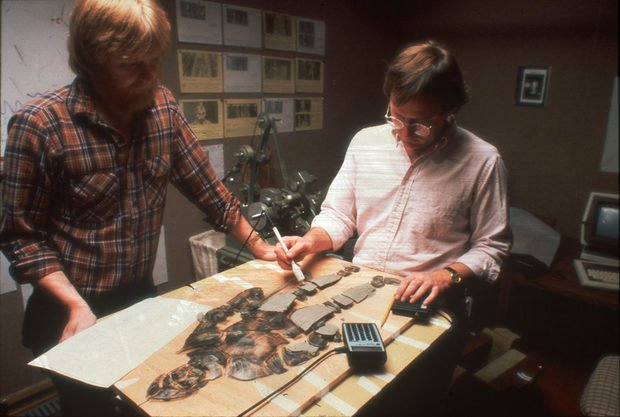
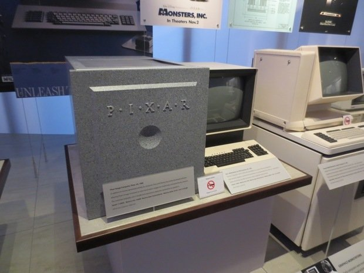
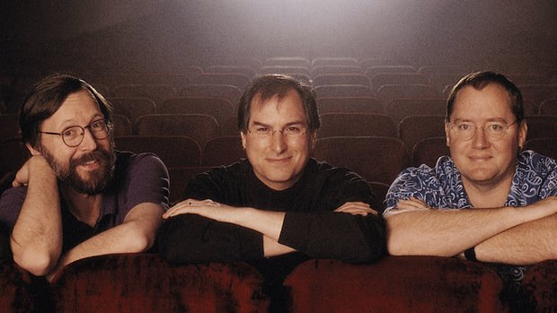
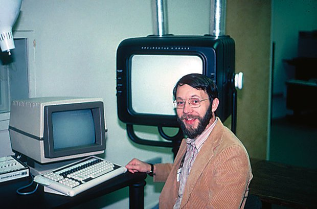
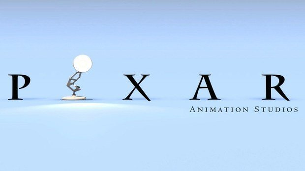
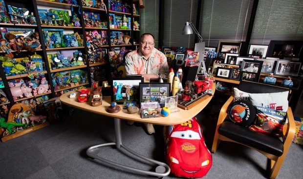
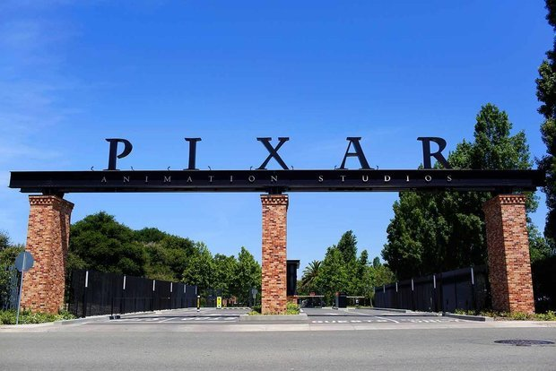

Изначально Pixar помогал медикам
История Pixar началась в 1979 году в Сан-Франциско — в только что основанном отделе разработки производственной компании Lucasfilm's Computer Division под шефством легендарного режиссера Джорджа Лукаса. Много позже Lucasfilm станет известной как одна из крупнейших кинематографических компаний мира (пока ее в 2012 году не поглотит Disney), но в 80-е она специализировалось на новых компьютерных технологиях для мира кино.

Уже в то время Лукас понимал, что будущее за цифрой: компьютерной графикой и цифровыми системами редактирования. Чтобы дать жизнь новому подразделению, он много месяцев провел в поисках подходящего специалиста. Поиски увенчались успехом — отдел возглавил талантливый разработчик, специалист в области компьютерной графики Эд Кэтмелл, которого Лукас переманил из Нью-Йоркского технологического института.
Помимо того, что Кэтмелл был настоящим самородком и компьютерным гением, он был еще и преданным фанатом Disney и буквально грезил мультипликацией. Хотя до того момента, когда ему это пригодится, пройдет еще немало лет. Пока же отдел Кэтмелла с неменьшим энтузиазмом всерьез взялся за разработку мощного компьютера и софта, позволяющего заниматься высокотехнологичным моделированием и анимацией. Релиз итога многолетней работы команды Pixar Image Computer состоялся лишь в 1986 году.
Работая над технической составляющей Lucasfilm, Эд Кэтмелл не расставался со своими творческими задумками: в 1983 году он приглашает в команду молодого художника-аниматора, выпускника Калифорнийского университета искусств (который был основан Уолтом Диснеем) Джона Лассетера в качестве дизайнера интерфейса. На базе разработок Кэтмелла Лассетер фактически создает первый в мире мультфильм, выполненный с помощью компьютерной графики, — короткометражную ленту «Приключения Андре и Пчелки Уолли».

«Когда я пришел, отдел разработки Lucasfilm был очень маленькой командой, но это были самые умные, самые удивительные компьютерные исследователи со всего мира. Они привели меня к работе над самой первой трехмерной компьютерной анимацией персонажа. Тогда я занимался разработкой вещей в «Диснее», но в то время компьютеры создавали только фоны, а персонажи по-прежнему анимировались вручную. Но Эд бросил мне вызов», — рассказывал Джон Лассетер в интервью The Daily Telegraph в 2015 году.
Дата презентации мультфильма, 1984 год, вошла во все учебники по мультипликации и графическому дизайну, технология стала прорывом для всей киноиндустрии, хотя хронометраж «Приключений Андре и Пчелки Уолли» составил всего 1,5 минуты. Фильм считается первым фильмом Pixar, хотя в реальности такой студии еще не существовало.
Покупка Pixar Стивом Джобсом
Все изменилось в 1986 году: Джордж Лукас продал отдел разработки Lucasfilm вместе со всеми ресурсами Стиву Джобсу за $10 млн, по крайней мере, именно так сделка была представлена широкой общественности. В реальности все было несколько сложнее, ведь в то время обе «стороны сделки» были, мягко говоря, не в лучшем положении. Отдел Кэтмелла еще в 1983 году начинает испытывать финансовые трудности, Лукас год за годом срезает финансирование, не видя быстрого успеха инвестиций, а вскоре переживает развод и раздел имущества с бывшей супругой.

За два года до этого из-за постоянных скандалов и скверного характера Стива Джобса отстраняют от работы в его собственном детище — Apple. Собравшись с силами, он основывает новую компанию NeXT Computer, серьезно увлекшись будущим компьютерной графики. На одной из многочисленных отраслевых выставок Джобс знакомится с Лукасом, и их планы совпадают. Сразу же после приобретения, 3 февраля 1986 года, в штате Калифорния была зарегистрирована независимая компания Pixar.
«Если бы я знал в 1986 году, чего мне будет стоить сохранить Pixar, я сомневаюсь, что купил бы компанию. Ключевая проблема заключалась в том, что в течение многих лет стоимость компьютеров, необходимых для создания анимации, которую мы могли бы продавать, была чрезвычайно высокой. Это сводило на нет все наши усилия», — объяснял много позже Джобс журналу Fortune.
Всей команде Pixar во главе с Кэтмеллом и Лассетером пришлось немало потрудиться, чтобы перевести Pixar из статуса неликвидного актива в статус перспективного проекта, особенно в глазах нового шефа. Джобс поручил Pixar отложить в сторону мечты об анимации и фильмах, вместо этого сосредоточившись на технической графике для рекламы и короткого метра, которую они могли бы продать. Джобс собирался использовать Pixar для демонстрации возможностей компьютеров NeXT — анимационной рекламы, первое время так и происходило, но дела шли не очень успешно. Компании не удавалось даже окупить собственное содержание, и Джобсу приходилось из своего кармана выписывать чеки на зарплаты сотрудникам. По примерным оценкам, прежде чем получить прибыль, он вложил в Pixar еще около $50 млн…
Первый «Оскар» и колоссальные издержки
В течение еще 10 лет Pixar будет заниматься выпуском анимационных рекламных роликов крупнейших мировых брендов, неоднократно студия удостаивалась премий за свежие идеи в рекламе, но действительно тяготела к другому. Возможно, компания и сейчас бы латала дыры в бюджете за счет коммерческих видео, если бы не упорство и настойчивость Кэтмелла и Лассетера: они продолжали разрабатывать и выпускать короткометражные мультфильмы с оригинальным сюжетом. В 1986 году состоялся режиссерский дебют Джона Лассетера: в кинотеатрах Лос-Анджелеса был показан анимационный фильм под названием «Люксо-младший», всего через пару месяцев он был номинирован на «Оскар» (но награду все же не получил).

К слову, главный персонаж ленты — настольная лампа Люксо стала прототипом логотипа Pixar. Ровно через год студия получила свою первую (но далеко не последнюю) статуэтку «Оскар» — свет увидела короткометражка «Оловянная игрушка». Хотя Джобс все еще ставил во главу угла технологическую сущность компании, ему все же пришлось пересмотреть свое мнение и дать большую свободу подопечным. В Pixar начинают задумываться о создании полного метра… в партнерстве с The Walt Disney Company.
Грабительские контракты подписывают только банкроты
После того как Pixar взял первый «Оскар», Эд Кэтмелл вышел на Disney с предложением. Титан мира мультипликации к тому моменту уже много раз пытался переманить обратно своего беглого художника Джона Лассетера, но тот каждый раз отвечал отказом, взамен предлагая совместную работу с Pixar. После того как Pixar, наконец, получил признание, Disney решил согласиться на партнерский проект — им должен был стать 30-минутный анимационный фильм по мотивам короткометражки «Оловянная игрушка».
По условиям контракта, в течение 10 лет Pixar должен был создать пять фильмов. Disney забирал себе 80% выручки от проката будущих лент, а идеи команды Pixar должны были проходить через «сито» цензоров студии Уолта Диснея. Взамен Disney взял на себя все затраты и обязательства по рекламной кампании, лицензированию фильмов и их персонажей, а также обеспечению выхода в прокат.

Контракт не устраивал ни Кэтмелла, ни Лассетера, но финансовое положение Pixar не позволяло им диктовать свои условия. В 1992 году анимационная студия Стива Джобса подписала соглашение и начала работу над первым фильмом. Правда, за три года его создания первоначальная идея изменилась до неузнаваемости, а Кэтмелл и Лассетер не раз столкнулись с практически неразрешимыми дилеммами.
Речь идет о первом в мире полнометражном анимационном фильме, который вышел в широкий прокат, — «История игрушек». Забраковав пару десятков «рабочих идей» после нескольких мозговых штурмов, Pixar решил рассказать историю пластиковых кукол. По официальной легенде, программное обеспечение ранних 90-х просто не позволяло достаточно естественно и органично отрисовать человеческое тело, поэтому решено было пойти другим путем.
«Мы знали, на что способна компьютерная анимация. Каковы ее сильные стороны. И мы знали, что она не может сделать. Все было похоже на пластик. Так почему бы не сделать главных героев из пластика? Люди были самыми трудными для создания на имеющимся у нас в то время ПО, поэтому мы рассказали историю с точки зрения игрушек», — рассказывал Лассетер The Daily Telegraph.
Спустя девять лет компания Pixar объявила о первой прибыли
Начались самые сложные годы для всей команды. В марте 2018-го бывший финансовый директор Pixar Лоуренс Леви выпустил биографическую книгу о периоде работы в студии — «Pixar. Перезагрузка», в ней он подробно описывает, как Кэтмелл и Лассетер почти ежедневно покидали офис далеко за полночь, а ранним утром снова садились за работу.
Для каждого персонажа «Истории игрушек» была продумана своя сюжетная линия, бэк и возможные схемы развития, многие идеи так и остались похоронены в столах креативщиков. Так, например, получилось с космическим рейнджером Баззом Лайтером, который в первой редакции получился слишком заносчивым и раздражительным. Несколько раз решения Pixar «заворачивал» Disney, вынуждая команду в сжатые сроки наверстывать потерянное время.
В том же 1995-м Pixar завершил работу над «Историей игрушек». Главных героев озвучили известные актеры и комики Том Хэнкс, Тим Аллен и Энни Поттс, а прославленный американский певец Рэнди Ньюман составлял музыкальную партитуру фильма. Лента вышла в прокат 22 ноября и в первые же выходные заработала $40 млн. Через два месяца «Историю игрушек» признают самым кассовым фильмом года: доходы от проката во всем мире превысят $362 млн. Фильм Лассетера получит три номинации на «Оскар» в 1996 году и заберет все три статуэтки.

Всего через шесть дней после выхода фильма в прокат Джобс решается на IPO Pixar, разместив на бирже 6,9 млн акций. Рынок закрылся на уровне 22 долларов за акцию, тогда как первоначальная цена составляла 12—14 долларов за штуку. К 30 ноября акции поднялись до 45,5 доллара. В результате рыночная стоимость Pixar составила около $800 млн. Спустя девять лет после покупки студии у Лукаса Джобс сумел окупить Pixar, заработав порядка $600 млн.
В 1996-м Pixar завершил год с колоссальным скачком в доходах — до $38,2 млн и чистой прибылью в $25,3 млн. Цены на акции достигли рекордной отметки в $49 в четвертом квартале. Тогда же студия объявляет о прекращении работы с рекламой: Кэтмелл и Лассетер добились того, чтобы Pixar сместил фокус в сторону анимационного кино.
Это был успех, хотя и с ложкой дегтя — контракт с Disney с учетом ошеломительного успеха «Истории игрушек» стал казаться все более грабительским. Кроме того, в первых титрах прославившего студию мультфильма и вовсе не оказалось названия Pixar, вся слава чуть не ушла к детищу Уолта Диснея. Вопрос улаживал лично Стив Джобс: встретившись с президентом The Walt Disney Company Робертом Айгером, Джобс договорился о перераспределении прибыли с будущих фильмов в равных долях. В 1997 году студии публично объявляют о своем соглашении.
Каждая следующая работа Pixar била предыдущие рекорды, студия под шефством Лассетера и Кэтмелла становилась все популярнее, значительно совершенствовалась анимация. Под покровительством Disney вышли «Корпорация монстров», «Суперсемейка», «Тачки», «В поисках Немо» и первый сиквел «Истории игрушек». Помимо своих мегапопулярных работ в полном метре, Pixar продолжает выпускать авторские тонкие и умные короткометражки, собирая все возможные награды мира анимации и завоевывая признание самых авторитетных критиков.

Поглощение The Walt Disney Company
В 2006 году Стив Джобс продает Pixar The Walt Disney Company за $7,4 млрд. Для бизнесмена это не было простым решением, сделке предшествовали непростые события в его жизни. В 1996 году Apple приобретает NeXT, компания переживает не лучшие времена, и Джобс возвращается на должность генерального директора, помогая «яблочному» бизнесу нащупать новые точки роста. Параллельно он отходит от операционного руководства Pixar. В 2003 году становится известно об ухудшающемся состоянии здоровья Джобса, и он окончательно решает снять с себя часть нагрузки.
По условиям сделки, Джобс не потерял место в совете директоров Pixar и получил 7% акций Disney, став крупнейшим акционером компании среди физлиц. Джон Лассетер был назначен на должность главного креативного директора Pixar и подразделения Disney Animation, а Эд Кэтмелл полноценно встал у руля студии. Одним из главных отступных требований Джобса, по настоянию партнеров, стало полное невмешательство Disney в творческие процессы Pixar и сохранение всей команды. Disney, судя по всему, держит обещание и сейчас: тандем продолжает выпускать анимационные полнометражки и собирать приличные кассы по всему миру. В новейшей истории Pixar выпустил 10 оскароносных фильмов, включая мультфильмы «Рататуй», «ВАЛЛ-И», «Вверх», «Головоломка» и «Тайна Коко».
The Walt Disney Company не раскрывает информацию отдельно по каждому из своих активов, в том числе и Pixar, однако косвенно можно судить о том, что студия приносит хороший процент прибыли головной компании. По данным Bloomberg, выручка Disney в 2018 году выросла на 7,8%, составив $59,4 млрд. Одним из самых прибыльных сегментов для компании традиционно стал прокат, здесь особенно отметились шесть полнометражных картин, одна из которых, «Суперсемейка 2», создавалась именно на базе Pixar.
P. S. Эд Кэтмелл в возрасте 73 лет по-прежнему находится в рядах топ-менеджмента Pixar. Джон Лассетер 8 июня 2018 года был вынужден покинуть Disney из-за громкого скандала. По данным The Washington Post, режиссер был обвинен в сексуальных домогательствах и непристойном поведении по отношению к подчиненным. В январе 2019 года стало известно, что Лассетер возглавил американскую продюсерскую компанию Skydance Media, работающую над производством фильмов с Paramount Pictures Corporation.